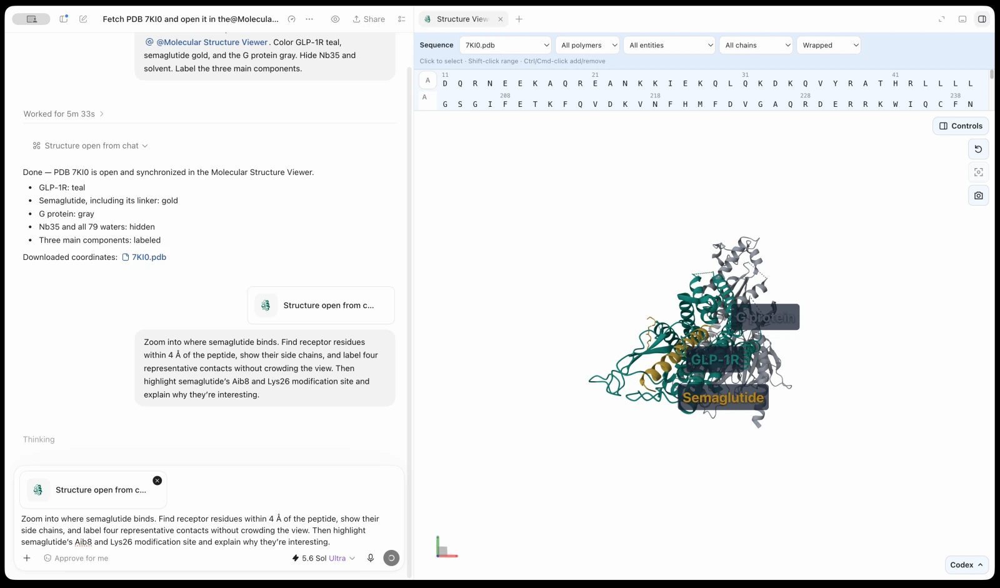
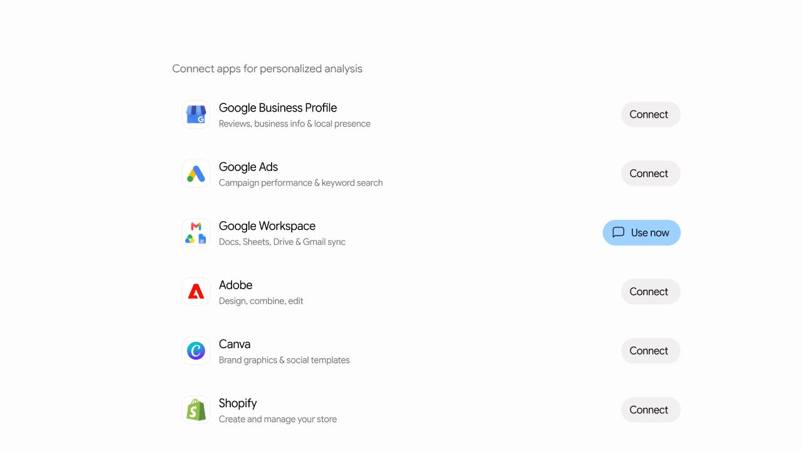
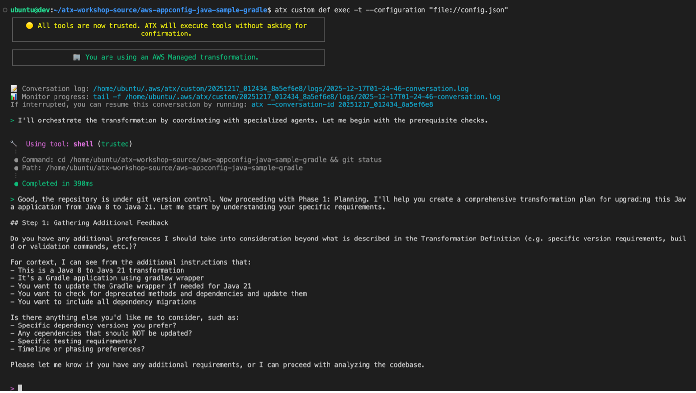

AI NEWS ISSUE 23
OpenAI, 신약 개발 업무를 잇는 Orchestra Bio 인수
연구 결과가 나와도 다음 업무가 저절로 준비되지는 않습니다. OpenAI의 신약 개발 플랫폼 인수, Claude의 실험 검증, Gemini의 소상공인 기능, AWS의 실행 통제를 통해 답을 만든 뒤 일을 이어가는 방법을 살펴봅니다.
업무 연결 · 실험 검증 · 실행 통제
30초 요약
- OpenAI · 인수 발표
연구 다음에 해야 할 일까지
Orchestra Bio 인수와 Rosalind 통합 방향을 발표했습니다. 과학적 발견을 일정·의사결정·후속 작업과 연결하려는 구상입니다.
인수의 의미 읽기 ↘ - Anthropic · 협력 연구 결과
실험한 211개 중 17개
단백질이 표적 독소에 붙는지 확인했습니다. 독을 중화하는 효과나 치료제의 안전성까지 검증한 결과는 아닙니다.
수치와 검증 범위 읽기 ↘ - Google · 순차 제공 예고
브랜드와 업무 앱을 한곳에
Gemini의 사업용 시작 화면, 브랜드 스타일 재사용, 재무자료 분석과 Shopify 등 연결 앱을 소개했습니다.
어떤 일을 돕는지 읽기 ↘ - AWS · 두 기술 가이드
도구를 찾고 실행 범위를 정하기
Agent Registry의 실행 중 도구 탐색과 Transform custom의 권한·비용 통제 예제를 공개했습니다.
탐색 구조 읽기 ↘ · 실행 통제 읽기 ↘
자료 확인 기준은 한국시간 2026년 10월 21일입니다. 중심이 되는 다섯 발표·가이드는 원문 기준 10월 20일 자료입니다. 이해를 돕는 이전 자료와 공식 시연은 각각 공개 시점을 표시했습니다. 연구·예제의 수치는 발표사 자료이며, 모임에서 직접 재현한 결과는 아닙니다.
01 / OPENAI · ORCHESTRA BIO
좋은 연구 결과를
다음 업무로 연결하려면
OpenAI가 신약 개발 업무를 조율하는 플랫폼 Orchestra Bio를 인수했다고 발표했습니다. 팀과 기술을 생명과학 연구용 모델·도구인 Rosalind와 결합해, 연구 결과를 후속 연구와 의사결정으로 이어주는 에이전트를 만들겠다는 계획입니다. OpenAI 한국어 발표 ↗
신약 개발에서는 연구뿐 아니라 제조·임상 등 여러 팀의 일이 맞물립니다. OpenAI는 제조 실패로 임상시험 시작이 미뤄지는 상황을 예로 들었습니다. Orchestra의 에이전트는 영향받는 업무와 일정을 찾고, 관련 자료와 대응 방안을 정리하도록 돕습니다. 다음 조치를 결정하는 주체는 연구자와 책임자입니다.
OpenAI의 업무 예시 · 설명용 재구성
일정 하나가 바뀌면, 연결된 일도 살펴봅니다
- 문제 발생
제조 과정의 차질로 예정된 물량을 준비하지 못합니다.
- 영향과 대안 정리
에이전트가 관련 업무·일정·대응 자료를 모읍니다.
- 사람의 결정
담당자가 분석을 검토하고 다음 조치를 정합니다.
이처럼 여러 업무의 순서와 의존관계를 관리하는 것을 워크플로 오케스트레이션이라고 합니다. 답변의 정확도에 더해, 그 답으로 누가 무엇을 해야 하는지 연결하는 능력이 필요하다는 이야기입니다.
다만 이번 발표는 인수와 통합 방향을 알린 것입니다. 개발 기간이 실제로 얼마나 줄었는지 보여주는 독립 측정은 제시하지 않았습니다. 인수 금액도 발표문에 나오지 않습니다.
공식 제품 화면 · OPENAI · 8월 28일
Rosalind에서 질문과 분자 구조를 함께 보기
통합 대상으로 언급된 Rosalind의 연구 도구는 어떤 모습일까요? 아래는 Rosalind Workbench의 기존 시연으로, Orchestra 통합 화면과는 별개의 사용 예시입니다.

OpenAI 공식 제품 시연 재생 · 약 29초
02 / ANTHROPIC · 단백질 결합 실험
후보를 만드는 능력과
실제로 확인하는 능력
Anthropic은 Claude Science 안에서 동작하는 내부 연구 모델에 전갈 신경독소를 표적으로 하는 작은 단백질을 설계하게 했습니다. 특정 분자에 달라붙도록 만든 단백질을 ‘결합체’라고 합니다. 후보를 컴퓨터로 평가한 뒤, 협력 실험기관에서 제작·측정했습니다. Anthropic 연구 발표 ↗
공식 연구 설명 영상 · ANTHROPIC · 10월 20일
독소에 붙는다는 것은 어떤 뜻일까요?
이번 연구 원문에 실린 1분짜리 애니메이션입니다. 독소와 결합체의 관계를 설명하며, 실험실 촬영이나 Claude 조작 화면은 아닙니다.
Anthropic·협력기관 발표 · 2026. 10. 20
생성한 설계와 실험한 설계는 다릅니다
- 318,484
컴퓨터에서 생성한 설계 수
- 180 + 31
Claude가 선정한 180개에 연구팀이 Claude와 31개 추가
- 211
실험으로 결합 여부를 평가한 설계 수
실험한 211개 중 17개가 연구팀의 결합 기준 충족
실험에는 Adaptyv Bio와 Twist Bioscience가 참여했습니다. 다만 원문 각주에 따르면 LqhIII라는 독소는 Adaptyv Bio만 평가했습니다. 모든 표적을 두 기관이 동일하게 검증했다거나, 독립 연구팀이 전체 과정을 재현했다고 해석해서는 안 됩니다.
약 64시간은 초기 요청부터 180개 선정까지의 모델 작업 구간입니다. 네 차례의 추가 지시가 있었고, 단백질 제작·실험까지 64시간에 끝난 것은 아닙니다. 확인된 것은 실험실에서 만든 독소와의 결합이며, 세포에서의 독성 중화나 동물에서의 치료 효과는 시험하지 않았습니다.
211개 설계와 관련 데이터도 공개돼, 제안과 실험 결과를 함께 살펴볼 수 있습니다.
03 / GOOGLE GEMINI · 소상공인 기능
브랜드를 기억하고
기존 업무 도구에 연결합니다
Google은 Gemini에 소상공인용 시작 화면과 마케팅·재무 기능을 소개했습니다. Google Business Profile·Ads·Workspace뿐 아니라 Shopify, Canva, Adobe, Dropbox, Wix, Zoho, Xero도 연결 대상으로 제시했습니다. Google 공식 발표 ↗
| 기능 | 어떻게 돕나요? |
|---|---|
| 브랜드 스타일 | 웹사이트·브랜드 가이드·글꼴·색상 정보를 참고해 이미지를 만듭니다. Nano Banana 2.1을 활용하며, 스타일을 유지해 반복 입력을 줄인다는 설명입니다. |
| 재무자료 분석 | 스프레드시트·영수증·구매 기록을 그래프와 상호작용 가능한 자료로 정리합니다. |
| 연결 앱 | 기존 서비스와 Gemini를 연결합니다. 실제 가능한 조회·수정 작업은 각 앱이 제공하는 기능과 허용한 권한에 달려 있습니다. |
Google 원문의 시작 화면·브랜드 이미지 데모 보기 ↗
Shopify · “최근 30일, 무엇이 잘 팔렸나요?”
Shopify 연결은 판매자가 자신의 상점을 관리하는 기능입니다. 공식 문서는 최근 30일 매출을 상품별로 보여달라는 질문을 예로 들고, 분석 결과를 표와 그래프로 돌려준다고 설명합니다. 상품 등록·수정과 재고 확인·수량 변경도 지원하지만, 실제 변경은 승인한 접근 범위와 직원 계정의 권한 안에서 이루어집니다. Shopify 공식 사용 예시 ↗
공식 화면 · GOOGLE 제공 · 10월 20일
Gemini에서 Shopify 연결을 시작하는 화면

Google 공식 영상 재생 · 27초
SHOPIFY · 설명용 시각화
매출을 묻고, 다음 판촉을 판단하기
“최근 30일 매출을 상품별로 보여줘.”
02 · Shopify의 매출 자료를 읽어 비교
03 · 사람이 판단캔들의 매출 비중이 높습니다. 재고와 마진도 확인한 뒤 다음 판촉 상품을 정합니다.
주문은 최근 내역을 한 번에 최대 50건까지 조회할 수 있지만, 이 연결로 환불하거나 주문을 취소할 수는 없습니다. 해당 처리는 Shopify 관리자에서 해야 합니다. 매출을 분석하는 일과 실제 주문을 바꾸는 일의 범위가 다릅니다.
Xero · “아직 받지 못한 돈은 얼마인가요?”
Xero는 10월 14일 Gemini 연결을 발표했습니다. 이어 17일 공식 글에서는 회계사가 이번 주 고객사 다섯 곳의 미팅을 준비하는 장면을 소개했습니다. 고객사마다 현금 잔액, 받을 돈, 전월 대비 이익을 요약해 달라고 요청하는 방식입니다. 실제 고객의 성과 측정 사례가 아니라 Xero가 제시한 활용 시나리오입니다. Xero 공식 활용 사례 ↗
가령 미수금은 총액만 보면 무엇부터 확인해야 할지 알기 어렵습니다. Xero는 Gemini 대화 안에서 연체 기간별 미수금 분포와 손익 그래프를 만들 수 있다고 설명합니다. 아래는 가상 금액으로 미수금 분포를 읽는 방법을 풀어 쓴 예시입니다. Xero 기능 발표 ↗
XERO · 설명용 시각화
미수금 총액에서 확인 순서까지
“아직 못 받은 금액을 연체 기간별로 나눠 보여줘.”
02 · Xero의 미수금 자료를 읽어 분류
- 납부 기한 전
- $900 · 60%
- 1~30일 연체
- $450 · 30%
- 31일 이상 연체
- $150 · 10%
03 · 사람이 확인31일 이상 밀린 $150의 청구서부터 살펴봅니다. 입금이 장부에 반영됐는지 확인한 뒤 연락할 순서를 정합니다.
Xero는 청구서 발행이나 결제 알림처럼 재무자료를 바꾸거나 외부에 전달하는 작업에는 사용자의 확인이 필요하다고 설명합니다. 매일 정해진 시간의 요약이나 Xero·Gmail을 함께 쓰는 후속 작업 준비는 10월 17일 글에서 향후 제공으로 예고했습니다.
관련 사례 영상 · GOOGLE CLOUD · 5월 20일
Xero의 JAX가 세무 업무를 이어가는 방식
조회에서 후속 작업으로 이어가는 구상은 Xero의 JAX 영상에서도 볼 수 있습니다. Gemini 모델을 활용한 세무 업무 사례로, 10월 Gemini 앱 연결과는 별도의 기능을 다룹니다.
이용 조건은 앱마다 다릅니다
Google은 소상공인 기능을 앞으로 며칠에 걸쳐 전 세계에 순차 제공하기 시작한다고 밝혔지만, 개별 연결 앱의 지원 범위는 별도입니다. 10월 21일 확인한 Google 도움말에서 Shopify와 Xero는 모두 개인 Google 계정·18세 이상·영어 사용을 조건으로 안내합니다.
- Shopify는 미국만 지원한다고 명시되어 있습니다. 한국에서 같은 연결을 바로 쓸 수 있다고 읽어서는 안 됩니다.
- Xero는 Gemini와 Xero가 모두 지원되는 지역으로 안내됩니다. 다만 Xero의 추가 워크플로 설명에는 유럽경제지역·영국·스위스·나이지리아 제외 각주가 있어, 작업별 제공 범위도 확인해야 합니다.
Google 연결 앱 지원 조건 ↗ · 각 계정에서 실제 연결되는지와 한국어 요청이 동작하는지는 직접 시험하지 않았습니다.
우리 업무에 가져올 때 확인할 점
브랜드를 반복 설명하는 수고가 줄어도 실제 상품의 색상·모양·구성품이 맞는지는 별도로 확인해야 합니다. 매출 그래프는 환불·세금 포함 여부를, 미수금 그래프는 장부의 입금 반영 시점을 확인해야 합니다. 자료를 쉽게 설명하는 기능과, 업무에 쓸 숫자를 검증하는 절차를 함께 갖춰야 합니다.
04 / AWS AGENT REGISTRY · 구현 가이드
필요한 도구를
일하는 도중에 찾습니다
앞에서는 사용자가 업무 앱을 연결하는 모습을 봤습니다. 이번에는 필요한 도구를 에이전트가 찾아 연결하도록 만드는 개발자의 관점을 살펴봅니다.
AWS는 에이전트가 작업에 필요한 도구를 실행 중에 검색하는 예제를 공개했습니다. 도구·에이전트의 공통 목록인 Agent Registry는 8월 31일 정식 출시됐고, 이번 소식은 10월 20일 공개한 활용 가이드입니다. 정식 출시 발표 ↗
도구가 많아지면 에이전트마다 모든 연결 정보를 넣고 관리하기가 번거로워집니다. AWS 예제는 승인된 목록에서 요청에 맞는 도구를 찾은 뒤, 그 도구만 연결합니다. 주문 상태 조회, 가격·할인 분석, 반품 문의를 예로 사용했습니다. 실행 중 도구 탐색 가이드 ↗
AWS 공개 예제 · 설명용 재구성
검색 → 연결 → 실행
- 검색
요청의 뜻에 맞는 승인된 도구·에이전트를 찾습니다.
- 연결
설명과 접속 정보를 읽고 별도의 인증정보로 연결합니다.
- 실행
선택한 도구를 호출하고 결과를 정리합니다.
목록에서 찾았다고 실행 권한까지 생기지는 않습니다. Registry 검색 결과에는 호출용 인증정보가 들어 있지 않습니다.
예제는 AI와 외부 도구를 잇는 규약인 MCP, 에이전트끼리 작업을 주고받는 규약인 A2A를 함께 씁니다. 중요한 것은 규약의 이름보다 필요한 기능을 찾고, 권한이 있는 범위에서 호출하는 구조입니다.
검색이 항상 올바른 도구를 고른다는 보장은 없습니다. AWS도 대표 요청으로 검색 품질을 평가하라고 설명합니다. 도구가 적고 구성이 고정된 업무라면 직접 연결하는 편이 단순할 수 있습니다.
공식 데모 영상 · AWS EVENTS · 4월 15일
등록된 도구를 승인하고 검색하는 실제 흐름
AWS Show & Tell의 프리뷰 당시 시연입니다. 8월 정식 출시와 본문의 10월 실행 중 도구 탐색 예제에 앞선 자료로, 당시 화면·API를 보여 줍니다.
05 / AWS TRANSFORM CUSTOM · 개발 작업 통제
자동으로 일할수록
행동과 비용의 범위를 정해야 합니다
필요한 도구를 찾은 뒤에는 실행 범위를 정해야 합니다. AWS의 다른 가이드는 오래된 Java 프로그램을 새 환경으로 옮기는 개발 도구인 Transform custom을 다룹니다. 핵심은 명령 허용 목록, 실행 계정의 권한, 작업별 비용 상한입니다. AWS 실행 권한·비용 가이드 ↗
표의 Agent Minute는 에이전트의 과금용 작업량입니다. 여러 에이전트의 작업 시간이 합산될 수 있어, 사람이 기다린 시간과는 다릅니다.
| 관측 결과 | 함께 읽을 조건 |
|---|---|
| 승인 요청 23 → 3 → 0회 | 작은 Java 예제에서 허용 목록을 보완한 결과입니다. 8~9월 실험이며, 명령어로 실행하는 도구인 CLI는 실험 시작 때 3.9.0, 후속 확인 때 3.10.0을 사용했습니다. |
| 1 상한에서 1.09에 중단 | 단위는 Agent Minute입니다. 사용량을 전달받는 간격 때문에 소폭 초과했으므로 정확히 1.00에서 멈추는 제한은 아닙니다. |
허용 목록은 사람이 승인에 응답할 수 있는 대화형 실행에만 적용됐습니다. 시험한 CLI 3.10.0의 비대화형 자동 실행은 모든 도구를 신뢰하는 옵션이 필요했습니다. 넓은 명령 패턴은 뒤에 이어 붙인 명령까지 허용할 수 있어, 승인 요청이 0회라는 사실을 안전성 점수로 읽어서는 안 됩니다.
실행 계정의 권한은 서비스에 기능을 요청하는 통로인 API를 제한하지만, 로컬 파일 수정 범위까지 막아주지는 않습니다. 작업을 연속으로 수행하는 자동 파이프라인에는 작업 환경의 격리와 결과 검토도 필요합니다.
예제의 45.8 Agent Minute·약 1.60달러는 특정 실행의 결과이며 평균 전환 비용이 아닙니다. 월별 예산 알림도 그 자체로 실행을 중단시키지는 않습니다.
공식 실행 화면 · AWS · 2월 4일
실행 화면에서 권한과 계획 확인하기
AWS의 Java 전환 가이드에 실린 실제 CLI 화면입니다. 2월에 공개된 Java 8 → 21 예시로, 위 표의 8~9월 권한·비용 제한 실험과는 다른 실행입니다.

OUR VIEW · 헬로우 휴먼의 해석
답이 나온 뒤
사람이 다시 해야 하는 일을 봅니다
이번 소식들은 신약 개발, 실험실 연구, 소상공인의 운영, 개발 자동화라는 서로 다른 문제를 다룹니다. 하나의 제품이나 같은 수준의 성과로 묶을 수는 없습니다. 다만 생성한 답을 업무에 쓰려면 연결·검증·통제가 뒤따라야 한다는 공통된 질문을 던집니다.
커머스에서 상품 판매를 중단한다고 가정해 보겠습니다. 상품 상태만 바꿔서는 일이 끝나지 않습니다. 연결된 프로모션, 이미 접수된 주문, 배송에 미칠 영향까지 확인해야 합니다. 이는 발표된 커머스 도입 사례가 아니라, 우리가 업무에 빗대어 본 가상 예시입니다.
| 역할 | 맡길 일 |
|---|---|
| 업무 소프트웨어 | 상품·주문 규칙을 적용하고 정확한 데이터를 반환합니다. |
| AI 모델 | 요청의 뜻을 이해하고 조사할 항목과 해결 방법을 제안합니다. |
| 에이전트 | 허용된 도구를 골라 필요한 자료를 조회합니다. |
| 워크플로 | 진행 상태, 검증, 승인과 실패 후 재시도를 관리합니다. |
이 구분은 우리의 설계 관점입니다. 모임에서는 영향받는 일을 찾고, 사람이 검토할 후속 작업으로 정리하는 단계부터 작게 살펴볼 수 있습니다.
CLUB EXPERIMENT · 아직 진행하지 않은 제안
판매 중단의 영향을
후속 작업표로 정리해 보세요
앞의 판매 중단 사례를 가상 자료와 AI 대화로 살펴보겠습니다. 코딩 없이, 근거·담당·승인 조건을 갖춘 후속 작업표를 만들어 보는 실험입니다.
01 / 넣어볼 자료 · 모두 가상
같은 상품, 세 가지 상황
판매 중인 ‘라임 캔들’을 서로 독립적인 A·B·C 상황에서 비교합니다.
-
A · 연결된 일 없음
- 진행 중인 행사
- 없음
- 배송 대기 주문
- 0건
- 출고 가능 여부
- 확인 대상 없음
-
B · 행사와 주문 연결
- 진행 중인 행사
- 가을 할인전 노출 중
- 배송 대기 주문
- 1건
- 출고 가능 여부
- 가능하다고 기재
-
C · 필요한 정보 누락
- 진행 중인 행사
- 가을 할인전 노출 중
- 배송 대기 주문
- 1건
- 출고 가능 여부
- 미입력 · 확인 필요
이 예시에서 정한 처리 규칙
- 판매 중단은 새 주문 접수만 멈추며, 기존 주문을 자동 취소하지 않습니다.
- 진행 중인 행사 노출은 마케팅 담당이 검토합니다.
- 기존 주문은 출고 가능 여부를 확인하고, 정보가 없으면 처리를 보류합니다.
- 모든 변경에는 담당 승인이 필요하며, 이번에는 제안만 작성합니다.
“위 자료와 규칙으로 판매 중단 전 확인할 일을 정리해줘. 근거·담당·승인 여부를 붙이고, 정보가 없으면 확인할 질문을 남겨줘.”
AI에는 자료·규칙·요청만 전달하고, 아래 표는 응답을 받은 뒤 비교하세요.
02 / 사람이 검토할 결과물 · 예시
자료의 차이가 다음 작업을 바꿉니다
| 업무와 근거 | 다음 작업 · 담당 · 승인 |
|---|---|
| A·B·C 신규 판매공통 자료 · 상품 판매 중 |
새 주문 접수 중단안 검토 담당 역할 · 상품 담당 변경 전 승인 필요 |
| B·C 행사 노출근거 · 가을 할인전 노출 중 |
해당 상품의 행사 노출 종료안 검토 담당 역할 · 마케팅 담당 변경 전 승인 필요 |
| B 기존 주문근거 · 대기 1건, 출고 가능 |
기존 주문의 출고안 검토 담당 역할 · 주문 담당 출고 전 승인 필요 |
| C 기존 주문근거 · 대기 1건, 출고 정보 미입력 |
출고 가능 여부 확인 요청안 작성 담당 역할 · 주문 담당 정보 확인 먼저 · 판단 보류 |
‘없음’과 ‘모름’을 구분하세요. A는 추가 행사·주문 작업이 없지만, C는 확인이 필요합니다. 미입력을 ‘출고 불가’나 ‘영향 없음’으로 해석하지 않습니다.
사람도 같은 자료로 표를 만든 뒤 비교해 보세요. 빠뜨린 업무, 근거 없는 판단, 담당·승인 조건을 확인하고 사람이 보완한 항목을 기록합니다.
이 예비 실험은 답을 검토 가능한 다음 작업으로 연결하는 연습입니다. 기사 속 제품·연구를 재현하거나 실제 자동 실행 능력을 검증한 결과는 아닙니다.
SOURCES
참고 자료와 확인 범위
- OpenAI, Orchestra Bio 인수 ↗ 10월 20일 · 한국어 원문 · 인수·통합 방향·업무 예시
- OpenAI, Rosalind Workbench 제품 소개와 시연 ↗ 8월 28일 · 분자 구조 뷰어 실제 화면·약 29초 시연 · Orchestra 통합 화면과 구분
- Anthropic, 전갈 독소 결합체 연구 ↗ 10월 20일 · 설계 수·실험 결과·64시간의 범위·LqhIII 각주
- Google, 소상공인을 위한 Gemini 도구 ↗ 10월 20일 · 연결 앱·브랜드 스타일·재무 분석·순차 제공 예고
- Shopify, Gemini 연결 사용 안내 ↗ 10월 21일 확인 · 상품별 매출 질문·표와 그래프·주문 조회·변경 제한
- Xero, Gemini 연결 발표 ↗ 10월 14일 · 손익·현금·미수금 분석과 시각화
- Xero, 고객 미팅 준비 활용 시나리오 ↗ 10월 17일 · 고객사별 요약·사용자 확인·추가 워크플로 예고와 지역 각주
- Google Cloud, Xero의 JAX·Gemini 3.5 Flash 사례 영상 ↗ 5월 20일 · 2분 37초 · 1099 세무 업무 구상 · 10월 Gemini 앱 연결과 별개
- Google, 연결 앱별 이용 조건 ↗ 10월 21일 확인 · 계정·연령·언어·지역 조건
- AWS Agent Registry 정식 출시 ↗ 8월 31일 · 한국어 원문 · 출시 시점 확인
- AWS, 실행 중 도구 탐색 가이드 ↗ 10월 20일 · 검색·연결·실행 예제, 승인과 인증의 구분
- AWS Events, Agent Registry Show & Tell ↗ 4월 15일 · 프리뷰 당시 등록·승인·검색 시연 · 41:07 승인·검색, 46:06 사용자 검색
- AWS, Transform custom의 권한·비용 제한 ↗ 10월 20일 · 8~9월의 Java 예제 실험 · CLI 버전·실행 방식의 제약
- AWS, Transform custom Java 전환 가이드 ↗ 2월 4일 · Figure 3의 실제 CLI 화면 · Java 8 → 21 · 본문 권한 제한 실험과 별개
한국시간 2026년 10월 21일에 공식 원문과 미디어 내용을 확인했습니다. 공급사의 기능·연구·예제를 직접 사용하거나 재현하지 않았습니다. 공식 시연·설명 애니메이션·가상 데이터 도식의 성격과 시점은 각 캡션에 표시했습니다.
이번에 확인한 자료에서 Orchestra 통합 제품 화면과 Xero의 10월 Gemini 앱 연결 전용 데모는 찾지 못했습니다. 관련 제품의 기존 시연은 본문에서 별도 사례로 소개했습니다.